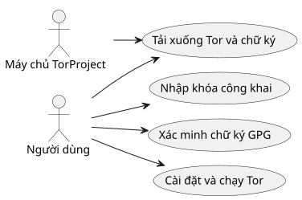
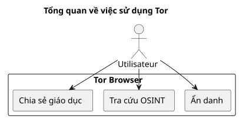

Cài đặt và kiểm tra Tor Browser trên Ubuntu
Đăng ngày 05 October 2025
Giới thiệu
Trong một thế giới mà quyền riêng tư kỹ thuật số ngày càng bị đe dọa, Tor Browser vẫn là một công cụ thiết yếu để bảo vệ sự ẩn danh và quyền tự do thông tin của mình. Tuy nhiên, điều quan trọng là không bao giờ được chạy một phần mềm đã tải xuống mà không cóxác minh tính xác thực của nóVui lòng cung cấp văn bản tiếng Pháp cần dịch. Bài viết này trình bày một phương pháp toàn diện để:
-
Tải xuống Tor Browser và chữ ký của nó`.asc`
-
Kiểm tra tính hợp lệ của tệp đã tải xuống
-
Cài đặt và khởi chạy Tor Browser trên Ubuntu
-
Thêm vào menu màn hình chính để sử dụng hàng ngày
-
Khám phá các tài nguyên giáo dục và OSINT đạo đức thông qua Tor
Tải xuống Tor và chữ ký của nó
Tạo một thư mục riêng cho trình duyệt Tor:
mkdir -p ~/workspace/tipiak/tor
cd ~/workspace/tipiak/torSau đó, hãy tải xuống tệp lưu trữ của trình duyệt Tor và chữ ký của nó:
wget https://www.torproject.org/dist/torbrowser/14.5.7/tor-browser-linux-x86_64-14.5.7.tar.xz
wget https://www.torproject.org/dist/torbrowser/14.5.7/tor-browser-linux-x86_64-14.5.7.tar.xz.ascXác minh chữ ký mã hóa
Bước này làkhông thể thiếuđể đảm bảo rằng tệp đã tải xuống thực sự đến từ Tor Project và không bị sửa đổi.
1. Nhập khóa công khai của Tor Project
gpg --auto-key-locate nodefault,wkd --locate-keys torbrowser@torproject.orgKiểm tra xem khóa đã được nhập chính xác chưa:
gpg --list-keys torbrowser@torproject.org2. Kiểm tra chữ ký
gpg --verify tor-browser-linux-x86_64-14.5.7.tar.xz.asc tor-browser-linux-x86_64-14.5.7.tar.xzNếu mọi thứ chính xác, thông báo sau sẽ hiển thị:
gpg: Good signature from "Tor Browser Developers (signing key)"Trong trường hợp có cảnh báo về khóa không được chứng thực, điều này đơn giản có nghĩa là bạn chưa ký khóa tin cậy của Tor Project, nhưng chữ ký vẫn có giá trị.
Trường hợp thực tế: Chữ ký hợp lệ nhưng khóa không được chứng thực
Thường gặp một thông báo như thế này khi kiểm tra:
gpg --verify tor-browser-linux-x86_64-14.5.7.tar.xz.asc tor-browser-linux-x86_64-14.5.7.tar.xz
gpg: Signature faite le mar. 16 sept. 2025 14:26:26 CEST
gpg: avec la clef RSA CAAE408AEBE2288E96FC5D5E157432CF78A65729
gpg: Bonne signature de « Tor Browser Developers (signing key) <torbrowser@torproject.org> » [inconnu]
gpg: Attention : cette clef n'est pas certifiée avec une signature de confiance.
gpg: Rien n'indique que la signature appartient à son propriétaire.
Empreinte de clef principale : EF6E 286D DA85 EA2A 4BA7 DE68 4E2C 6E87 9329 8290
Empreinte de la sous-clef : CAAE 408A EBE2 288E 96FC 5D5E 1574 32CF 78A6 5729Thông báo này cho biết chữ ký về mặt kỹ thuật là "đúng" (tệp tin không bị thay đổi), nhưng hệ thống GPG của bạn không thể xác nhận sự tin cậy đối với chính khóa đó. Để xóa bỏ nghi ngờ này, điều bắt buộc là phải so sánh dấu vân tay của khóa chính (EF6E 286D DA85 EA2A 4BA7 DE68 4E2C 6E87 9329 8290) với bản được công bố trên trang web chính thức của Tor Project.
Theo trang web chính thức, dấu vân tay dự kiến là:`EF6E286DDA85EA2A4BA7DE684E2C6E8793298290`Vui lòng cung cấp văn bản cần dịch.
Vì dấu vân tay được hiển thị bởi`gpg`khớp hoàn toàn với khóa trên trang web chính thức, bạn có thể chắc chắn rằng khóa đó là hợp lệ và tệp tin là an toàn. Khi đó, cảnh báo "khóa không được chứng thực" chỉ là thông tin về cấu hình GPG cục bộ của bạn, chứ không phải về tính hợp lệ của chữ ký hay tính xác thực của tệp tin.
Tại sao cần kiểm tra chữ ký?
Việc xác minh chữ ký GPG là một hành động cơ bản của bảo mật kỹ thuật số. Nó cho phép:
-
Đảm bảotính xác thựccủa phần mềm đã tải xuống
-
Ngăn chặn việc cài đặt một tệp tin bị xâm nhập bởi một tác nhân độc hại
-
Tham gia vàochủ quyền sốcá nhân
-
Thúc đẩy một văn hóa kỹ thuật số có trách nhiệm và đạo đức

Giải nén và khởi chạy Tor Browser
Giải nén tệp lưu trữ đã tải xuống:
tar -xvf tor-browser-linux-x86_64-14.5.7.tar.xz
cd tor-browserSau đó, hãy khởi chạy trình duyệt:
./start-tor-browser.desktopTrong lần khởi chạy đầu tiên, một cửa sổ cấu hình sẽ mở ra để thiết lập kết nối với mạng Tor.
Tích hợp vào môi trường desktop Ubuntu
Để thêm Tor Browser vào menu ứng dụng:
./start-tor-browser.desktop --register-appSau đó bạn có thể:
-
Khởi chạy Tor Browser từ menu ứng dụng
-
Thêm vào mục yêu thích trên dock
-
Tạo phím tắt nếu muốn

Khám phá các tài nguyên giáo dục với Tor
Tor không chỉ đơn thuần là một công cụ ẩn danh. Đây là cổng truy cập vào các nguồn tài nguyên giáo dục và nghiên cứu, đặc biệt là trong các lĩnh vực:
-
OSINT (Tình báo nguồn mở)
-
Chia sẻ giáo dục và mã nguồn mở
-
https://archive.org(truy cập qua Tor để bảo mật hơn)
-
https://github.com/(có thể tra cứu qua Tor)
-
https://librarygenesis.pro(truy cập vào tài liệu khoa học mở)
-
Truyền thụ kiến thức và thấu hiểu con người trong xã hội số
-
Tài liệu về văn hóa số, tự do ngôn luận và tiếp cận tri thức
-
Tài liệu tự do về an ninh mạng và đạo đức công nghệ
Cập nhật Tor Browser
Để đảm bảo an ninh tối ưu, việc duy trì Tor Browser luôn được cập nhật là rất quan trọng. Trình duyệt tích hợp một cơ chế cập nhật tự động có thể được kích hoạt bằng dòng lệnh.
Từ thư mục cài đặt của Tor Browser, bạn chỉ cần chạy lại tập lệnh khởi động:
cd ~/workspace/tipiak/tor/tor-browser
./start-tor-browser.desktopKhi khởi chạy, Tor Browser sẽ tự động kiểm tra xem có phiên bản mới hay không. Nếu có, trình duyệt sẽ tải xuống và cài đặt phiên bản đó cho bạn.
Phương pháp đơn giản này đảm bảo rằng bạn luôn có các bản vá bảo mật mới nhất và những cải tiến gần đây nhất, điều này là thiết yếu để duyệt web an toàn.
Kết luận
Kiểm tra các tệp tải xuống là một phản xạ thiết yếu cho bất kỳ ai muốn phát triển trong một môi trường kỹ thuật số an toàn. Cài đặt Tor một cách xác minh làbảo vệ tính toàn vẹn kỹ thuật số của mình, duy trì niềm tin vào phần mềm tự do, et tăng cường khả năng tự chủ về thông tinVui lòng cung cấp nội dung cần dịch.
An ninh kỹ thuật số là một hành động của ý thức, không phải của sự hoang tưởng.

Tham khảo
-
Trang web chính thức của Tor Project:https://www.torproject.org/download/[https://www.torproject.org/download/]
-
Tài liệu kiểm tra chữ ký:https://support.torproject.org/tbb/how-to-verify-signature/[https://support.torproject.org/tbb/how-to-verify-signature/]
-
Tài liệu Ubuntu:https://ubuntu.com[https://ubuntu.com]
-
Kho lưu trữ giáo dục:https://archive.org/details/opensource[https://archive.org/details/opensource]
|
Bài viết này nằm trong loạt bài An ninh và Ý thức Số, nhằm thúc đẩy các thực hành có trách nhiệm và mang tính giáo dục xoay quanh các công cụ tự do. |